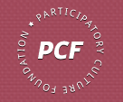

Participatory Culture Foundation

Website:
http://pculture.org Location:
Boston, MA
Build a more open and diverse world of communication. PCF makes bottom-up economies and cultures possible by ensuring that our political, social and cultural systems are open and democratic everywhere. We work to eliminate gatekeepers and empower communities around the world.
As television moves online, we face a crucial decision. Will it be open like the internet? Or will it be controlled by a small number of gatekeepers like cable and broadcast television? We think the answer should be obvious: let’s make media in our communities more open than it’s ever been.
Project Description:
Due to media consolidation and disintegrating business models, traditional local journalism is on the decline. As a result, mainstream media is failing the needs of American towns and cities for a local discourse that articulates common identities and informs the democratic process. Citizen journalism could fill this void, but citizen journalists constantly struggle for audience, reach, and relevance.
The rapidly growing online video medium can help, but critical infrastructure is missing. Local journalism can reach more people by embracing online video, and citizen video journalists can engage a larger audience by going local. But no infrastructure exists to connect local video producers to a local audience. Large corporate video hosts aren’t interested in meeting the needs of specific local communities, creating a chicken and egg problem: creators lack the motivation a potential audience provides, and would-be viewers cannot find enough interesting video to make it worth looking. The need is clear: try searching for videos from your local community and you will quickly be drowned in false results and dead ends.
Miro in My Community (MMC) will create a series of community-based video hubs to connect local creators, public access stations, and the community of viewers. With these new hubs and the relationships that they form, vibrant local communities of video can flourish. Quite simply, we can create an active, citizen-driven, online television world for individual cities and towns.
MMC will focus on five communities in the first year (three in Massachusetts). Each hub will be a local website (e.g. worcestervideo.org) where people can watch and submit video. A partnership with the local public access station will ground an outreach effort to connect creators and creative organizations to residents that are eager to engage with local news and information. MMC will provide tools for syndication (in and out), ways to geographically code and gather local content from across the internet, and custom local versions of the open source video player Miro.
In the second year, with the underlying infrastructure complete, MMC will be able to reach 12 communities at less than half the project cost. We will modularize outreach so that other media activists can use our tools and methods, and so that community foundations that want to support citizen journalism can fund roll-out to additional cities.
A VISTA member could be instrumental in advancing this project. We need an individual who is both technically aware (though not necessarily a programmer) and interested in community building. The VISTA member will lead outreach to local access and public television stations in Massachusetts and around the country. The member will help us develop and deploy training manuals and will work with partner organizations to run training session for local participants.
Project Tangibles:
All software that is created by Participatory Culture Foundation is free and open-source, fed back into the community for re-use and re-development by anyone. The same will be true for the Miro Local TV infrastructure.
All text and web content created by PCF is released under a creative commons or public domain license. Training methods and manuals that the VISTA member will help create will be published on our website and freely distributed to partners and potential partners around the country and eventually the world.
Supported Projects
Miro in My Community Project Developer
Anne Jonas
9/2009 — 9/2011
Miro in My Community (MMC) will create a series of community-based video hubs to connect local creators, public access stations, and the community of viewers. With these new hubs and the relationships that they form, vibrant local communities of video can flourish. Quite simply, we can create an active, citizen-driven, online television world for individual cities and towns.
A VISTA member could be instrumental in advancing this project. We need an individual who is both technically aware (though not necessarily a programmer) and interested in community building. The VISTA member will lead outreach to local access and public television stations in Massachusetts and around the country. The member will help us develop and deploy training manuals and will work with partner organizations to run training session for local participants.
Goal: To successfully roll out Miro Local TV in communities around Massachusetts and the US, by engaging with partner organizations and creating materials and workshops.
Anne has been invaluable to PCF and has helped us grow as an organization. She, with support from myself as well as Nick Reville, has taken Miro Community from an early-stage project to a fully-fledged platform that is serving many communities.
Anne is beginning to work on making Miro Community a self-sustaining pillar in PCF’s arsenal. She has began to develop a userbase that will support the project with monthly fees and/or contracts.
Anne has started work on a miro community site that aggregates feminist video content from all over the web. It has began taking a life of its own and has been written up on feminist blogs and in Bitch Magazine.